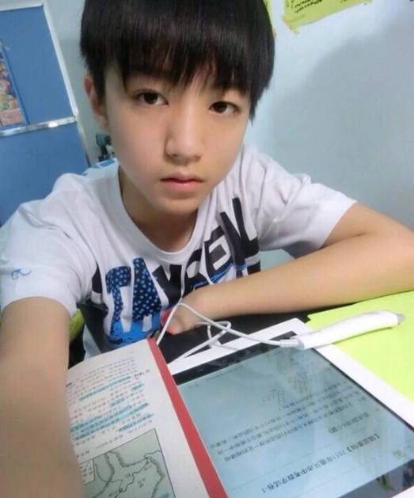
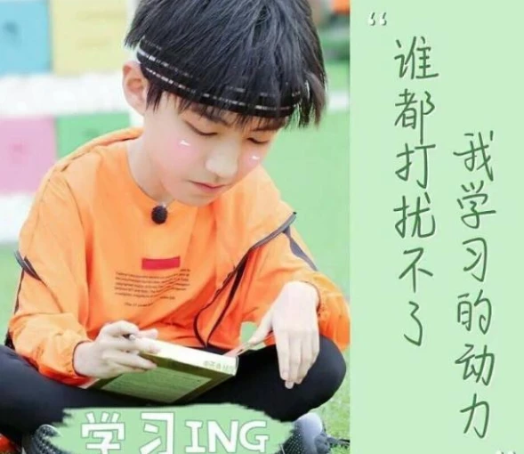
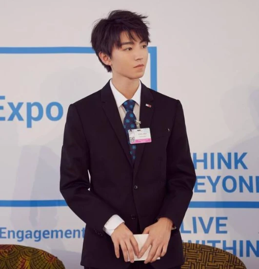
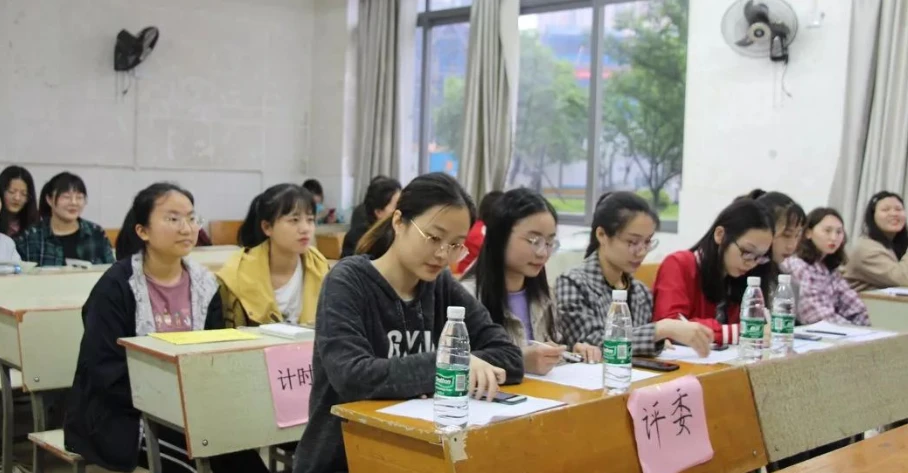
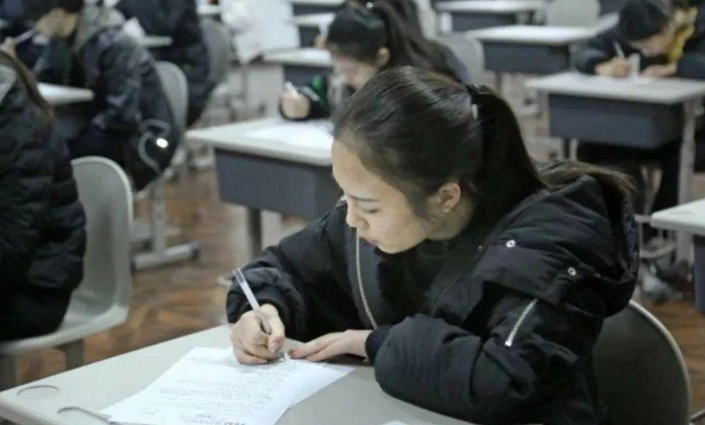
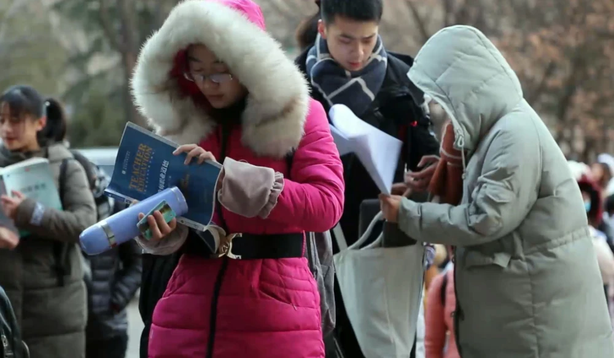
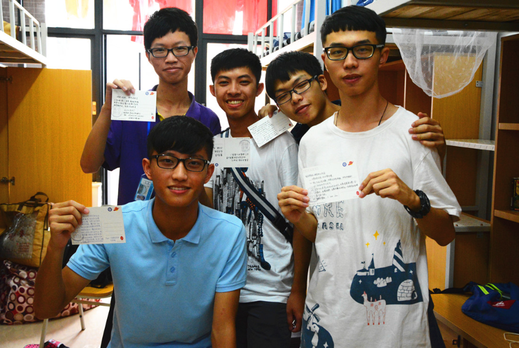

编辑：xuwenwei
2021-01-14 10:09:19
提起王俊凯，那真是众多学生们的学习榜样，小小年纪便红遍了大江南北，现在就读于北京电影学院的表演系。
在众多00后的心中，TFBOYS组合的三个小男孩，都是许多人的目标，在2013年出道至今，依然受到众多人的喜爱。
在2017年的时候，王俊凯参加高考便受到了众多人的关注，那年他的高考成绩分数为438分，可能在很多人看来成绩并不十分出色，考到6/700分的学生大有人在。
但是要知道，作为艺术生来说，这个分数真的是十分出色了，尤其是他每天还有那么多的活动，还能够一直保持成绩的优异，真的是非常出色了。

在当时以超过重庆表演本科分数线98分的成绩，成功地被北影所录取，也就是说即使不以艺术生的身份，小凯依然能够上一所很好的大学，是个名副其实的学霸！
王俊凯大学英语成绩公开，不愧是学生的榜样
在大学期间，他也依然没有落下学习，在参加活动的同时，也坚持不把学习落下，还经常和同学们一起出早功，可以说是非常忙碌了。

可能在很多人心中都会觉得，大学生通过英语四六级不是非常正常吗？这有什么可值得炫耀的？但是要注意的是，他不仅通过了英语四级考试，而且连英语六级都通过了！
在很多大学生的心中，都觉得大学英语四六级并不在重要，甚至有的学生只是把四级考过了就了事了，但是英语六级却是很难的！
有很多研究生都没有通过英语六级的考试，但是他却在大学期间考过了英语四六级，成绩还好到没话说，真不愧是学生们学习的榜样，不愧是学霸，不愧是小凯！
不要觉得英语四六级很好过云云，换成普通人可能英语四级都要考好几次，更何况小凯还要参加诸多活动，可以说是比你优秀的人比你还要努力！

大学英语四六级的重要性是什么？有哪些影响？
1. 英语四级不过可能影响毕业
虽然现在英语四六级没有等级证书了，但是很多学校对于学生的英语成绩还是很重视的，很多大学将英语成绩视为毕业的条件，若是英语成绩不通过的话，很有可能会延期毕业或是拿不到学位证书。

尤其是师范专业或医学类专业，对于英语成绩的要求是十分严格的，所以学生们不要认为以后用不到英语，就对其不重视。
2. 是学生保研的基础
保研通俗地说就是保送研究生，要知道保研和考研两者是不同的，考研还需要学生辛辛苦苦地备考，很可能两三年都考不过。
但是保研，也就是意味在允许范围内，学生们只要通过面试就能够直接成为研究生，不用再和其他同学一样辛苦奋战，但若是英语成绩不合格的话，或者说英语四级没有过的话，那也将会直接和保研资格说再见。
3. 考研学生英语四六级成绩必须优异
研究生考试难度很大，而英语成绩也是很重要的，若是学生想要考研的话，那就更要重视英语成绩了，至少英语四六级是必须通过的。

每年都会有许多学生报考研究生，但是其中通过的却不足十之二三，还有许多学生英语四级没过而被刷下来，所以学生一定要重视起来。
4. 考公务员时候的必备条件
每年的公务员考试都是热门考试，而公务员的许多岗位，对于学生的英语成绩都是有着很高的要求的，若是成绩不达标准的话，便会面临着淘汰。
5. 未来就业的敲门砖
现在是个国际化的社会，学生们在就业找工作的时候，英语成绩出色的话是很吃香的，尤其是一些大型企业或是外企，对于学生的英语都有着很高的要求，而且口语也同样很重要。

英语成绩优异也是学生们在未来就业的“敲门砖”，能够比别人占据更多的优势，从而在就业的时候“快人一步”。
大学生如何更好的提升个人能力？让自己不断变得更加优秀？
1. 大学期间入党，拥有党员身份
大学时期入党还是很重要的，入党本身就是一个宜早不宜迟的事情，若是等到工作之后再入党的话，将会比较困难。入党是一种荣誉，也是一种肯定，对于学生儿也很重要。
2. 提高个人能力，至少有一次演讲的机会
可能很多学生的性格天生内向，不敢讲自己的想法表达出来，那在大学期间就要努力提高个人能力了，至少让自己有一次演讲的机会。
学生可以参加一些含金量较高的社团，比如辩论社、学生会等社团，都能够提高个人能力，还能够有演讲的机会，在演讲的过程中，学生会不断的提升自信，让自己的性格和想法得到释放，让自己变得更加优秀。
3. 学会合理消费，并为工作积累经验
在大学期间，不要养成花钱大手大脚的坏习惯，要学会合理消费，而不是冲动消费，钱花了不少但是什么东西都没见到。

学生可以多做一些学生兼职，利用好自己的专业技能找工作，在积累工作经验的同时，还能够赚取零花钱，何乐而不为呢？
小编寄语：王俊凯大学英语成绩公开，学习成绩好到没话说，不愧是学生们学习的榜样，不愧是个学霸！学生们也要努力认真学习，向优秀的榜样学习，最终自己也能够变得更加优秀！
今日话题：你的大学英语四六级通过了吗？考了多少分？
喜欢这篇文章的宝宝们记得分享与收藏哦！关注我，我们下期再见啦~
（图片均源于网络，若有侵权请联系删除）
精品学习网(5iedu.com.cn)在建设过程中引用了互联网上的一些信息资源并对有明确来源的信息注明了出处，版权归原作者及原网站所有，如果您对本站信息资源版权的归属问题存有异议，请您致信qinquan#5iedu.com.cn(将#换成@)，我们会立即做出答复并及时解决。如果您认为本站有侵犯您权益的行为，请通知我们，我们一定根据实际情况及时处理。